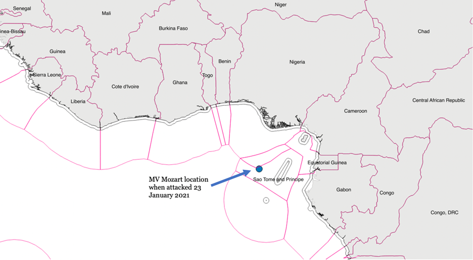
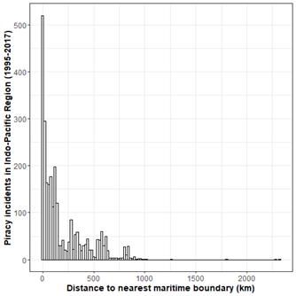

In January 2021, the MV Mozart, a large Liberian flagged container ship on its way to Cape Town, South Africa from Lagos, Nigeria, was seized by Nigerian-based pirates close to Sao Tome's maritime border. Fifteen abducted officers and crew members were released later in February after the shipping company paid a ransom, but one sailor died in the assault.
The attack was one of at least 38 incidents that occurred during the first quarter of 2021. Although the number of pirate incidents has decreased over the last year , the number of kidnapped sailors surged, nearly doubling from the year before, and are at the highest level in a decade according to the International Maritime Bureau.
Piracy might be pervasive, but it remains geographically restricted. Nearly half of these pirate attacks and attempted attacks in 2021, including the one on the MV Mozart, occurred in and around the Gulf of Guinea. Our research shows shows that contested maritime boundaries are partly driving the location of sea-piracy.

Maritime Crime Clusters Around Specific Locations
Hot spots stand out when examining pirate attacks. Five countries account for over 60% of the total pirate attacks between 1995 and 2017, and nearly 75% of the more sophisticated attacks against steaming ships. Economic deprivation explains much of what drives piracy in Somalia, Bangladesh, Indonesia, and Nigeria.
Yet while poverty and joblessness are widespread, where the pirate attacks occur is more highly contained. For example, thousands of vessels transit the Singapore Straits each year, making it one of the busiest sea-lanes in the world, and consequently a frequent location for maritime crime. Pirates always look for rich "targets of opportunity," such as shipping lanes, geographic chokepoints, and ports, but this isn't enough to explain the geographic foundations of sea-piracy.
Contested Maritime Boundaries and Pirate Attacks
Our research suggests that pirates exploit porous maritime boundary lines—the lines that mark countries' territorial waters—and are particularly attracted to areas where countries have conflicted and uncertain territorial water claims.
The figure below shows the frequency of off-shore sea-piracy incidents in the Indo-Pacific region from 1995 to 2016. Ship attacks occur closer to maritime boundaries than one would expect by chance alone. Peter Lehr notes similar behavior in the 19th century as pirates exploited competition among European colonial powers to evade capture.

Why would we see pirates attacking along these contested boundaries? Because pirates and other maritime criminals understand that they can exploit the fear of conflict escalation between countries to dodge state security personnel.
Coast guard forces and maritime police hesitate to enter the territorial waters of neighboring states since such maritime trespassing might lead to diplomatic crises or standoffs, especially between governments that already dispute local borders.This is what we see in the Gulf of Guinea and Southeast Asia.
Pirates are also likely to attack closer to countries with weaker law enforcement capacity. It is no accident that most incidents of piracy occur in the eastbound lane of the Singapore Straits, which sits closer to Indonesia's Riau Islands, and therefore are less likely to attract maritime patrols from Singapore, a more capable state in the region.
Joint national action with local implementation
Conflict over maritime boundaries also undermines countries' ability to combat maritime time.
Under international law (United Nations Convention on the Law of the Sea, Article 111), coastal states can extend their jurisdiction beyond their own maritime border to pursue and seize any vessel involved in illicit activities. The chase must begin in the territorial waters (or contiguous zone) where the illegal activity took place and continue into international waters.
But once the pirate's vessel crosses into the territorial waters of another state, the hunt must end, and the law enforcement ship turn back unless bilateral or regional agreements exist that sanction cross-border pursuit. In areas where maritime conflict prevails, such agreements are unlikely. While a country may want to secure maritime trade routes, countering maritime crime is costly and the conflict over maritime boundaries is often more salient to overall security interests.
For this reason, countries locked in maritime conflict will fail to pursue pirates and other maritime criminals effectively. In 1992, for example, the Royal Malaysian Police Marines chased a suspected pirate vessel out of Malaysian waters. Rather than follow the ship into Filipino maritime space, the captain of the Malaysian ship opted to turn around and return to Malaysian territorial waters. A 1994 agreement between Malaysia and the Philippines allowed for coordinated patrols in Sulu and Celebes Seas, but only along their shared maritime boundaries, and cross-border pursuits remained prohibited.
The two countries (along with Indonesia) revisited the issue of coordinated patrols in 2016 as Abu Sayyaf increased attacks against ships in the area. Philippine President Rodrigo Duterte conceded to hot pursuit given concerns about maritime piracy and the threat of terrorist violence. Remaining disagreements over territorial claims, jurisdictional control, and resource management prevent deeper cooperation.
Cooperation is Key to Tackling Maritime Piracy
What does our study mean for maritime security in the Indo-Pacific and US counter-piracy operations? Our research demonstrates that maritme crime can thrive where states are locked in contention and local law enforcement remains limited. Further, states in the Indo-Pacific are unlikely to be successful at reducing sea-piracy single-handedly.
That's why the US Navy trains annually with militaries and coastguards in the region and the US State Department has increased infrastructure assistance to help combat IUU fishing. The USAID has also increased assistance to the region, with a specific effort to strengthen political institutions (Indo-Pacific Transparency Initiative).
Formal military agreements, training opportunities, and joint action with other states, and through ASEAN, from information sharing to confidence-building measures to shared patrols, when done right, are effective at preventing maritime crime. The absence of such cooperation will only push illegal activities to the other side of the border.
(This blog post first appeared in Monkey Cage, The Washington Pos)